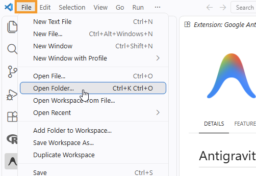
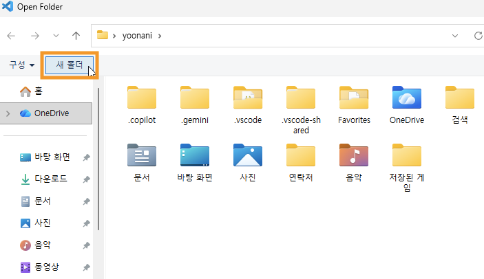
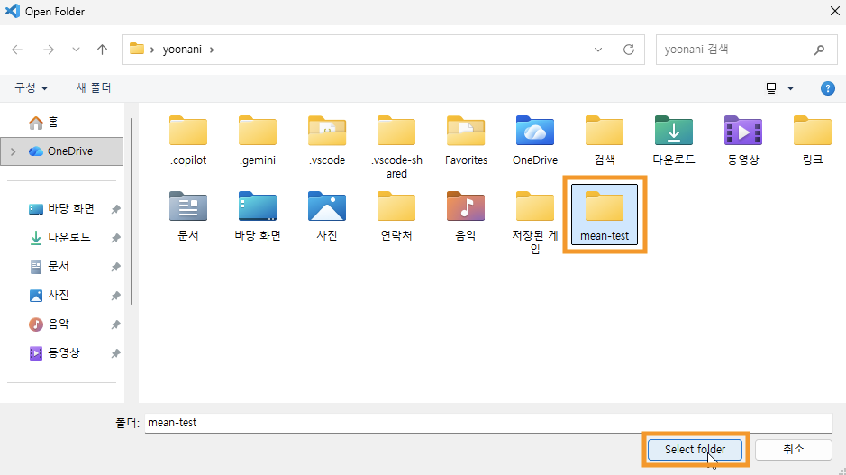
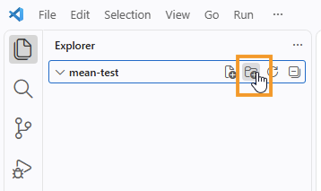
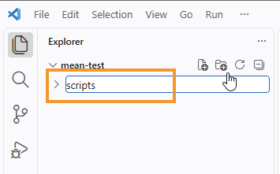
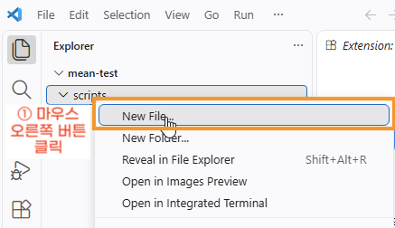
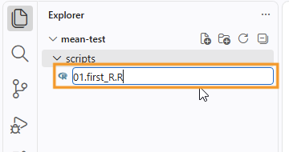
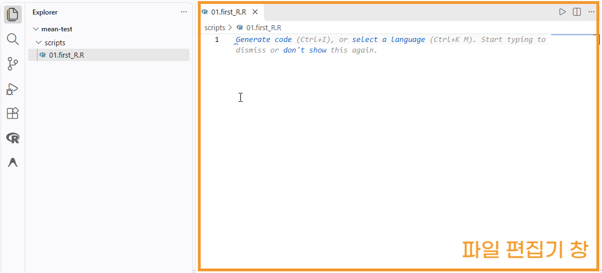
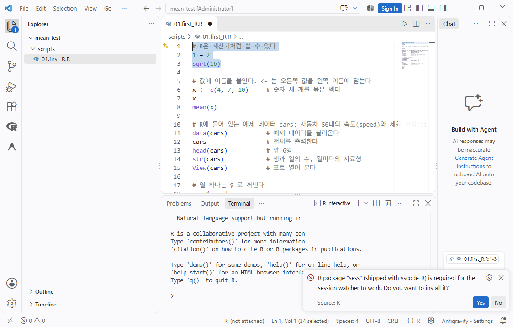
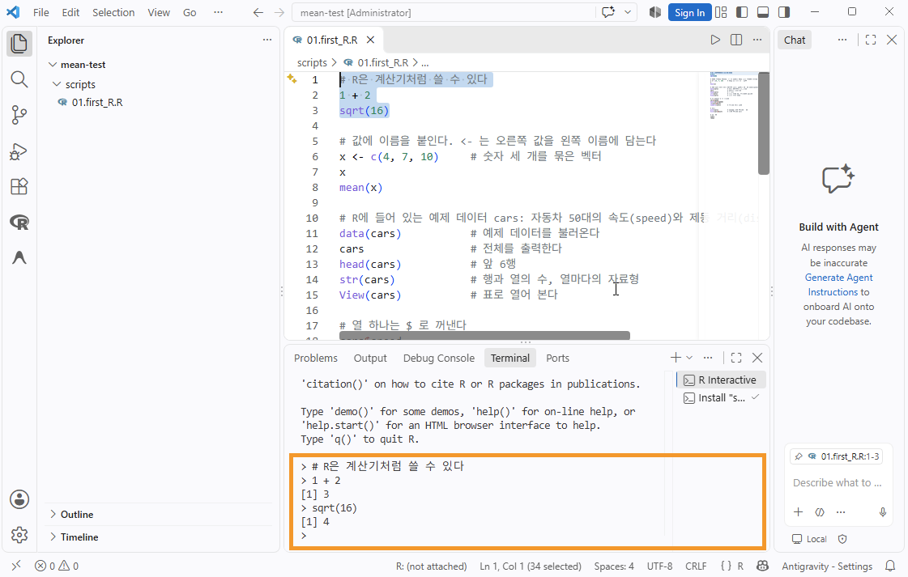

t 검정을 위한 데이터 준비
VS Code에서 폴더를 열어 첫 R 스크립트를 실행하고 실습 데이터를 만든다. 그 데이터를 tidyverse로 읽고, 구조와 기술통계와 그림으로 먼저 살펴본 뒤, 분석에 쓰기 좋게 다듬어 저장한다.
- 도구
- R과 tidyverse, VS Code. 설치는 VS Code에서 R 실행하기를 따라 먼저 해 둔다.
- 예제 데이터
- 식생활 교육 연구를 흉내 낸 연습용 가상 데이터. 48명의 교육 전·후 나트륨 섭취량(mg/일). 집단은 1과 0으로 입력되어 있다.
- 하는 일
- 프로젝트 폴더와 첫 스크립트 만들기, 실습 파일 만들기, CSV와 Excel 읽기, 구조·결측·기술통계 확인, 이름표 붙이기, 넓은 모양과 긴 모양 바꾸기, 그림 저장
- 함수 도움말
- 코드에서 점선 밑줄이 있는 함수 이름에 마우스를 올리면(휴대폰은 누르면) 목적, 인수, 반환값이 나타난다.
폴더를 열고 스크립트를 실행한다
R 코드는 스크립트 파일에 적고, 한 줄씩 R 터미널로 보내 실행한다. 첫 스크립트에서는 R에 들어 있는 예제 데이터 cars로 R의 가장 기본적인 사용법을 익힌다. R과 VS Code, R 확장을 아직 설치하지 않았다면 VS Code에서 R 실행하기를 먼저 따라 한다.
- 실습 폴더를 하나 만든다. 예:
mean-test. VS Code에서 파일(File) → 폴더 열기(Open Folder)로 이 폴더를 연다.실습 폴더를 만들고 여는 화면 보기

File 메뉴에서 Open Folder...를 누른다. 한글 메뉴에서는 파일 → 폴더 열기다. 
폴더를 고르는 창에서 새 폴더를 눌러 mean-test폴더를 만든다.
만든 mean-test폴더를 고르고 Select folder를 누른다. - R 스크립트는
scripts폴더에 모은다.scripts 폴더를 만드는 화면 보기

탐색기(Explorer)에서 mean-test오른쪽의 새 폴더(New Folder) 아이콘을 누른다.
이름 칸에 scripts를 적고 엔터 키를 누른다. - 탐색기에서
scripts폴더를 마우스 오른쪽 버튼으로 누르고 새 파일(New File...)을 골라01.first_R.R을 만든다. 확장자가.R이어야 R 파일로 인식한다. 열린 편집기 창에 아래 "첫 스크립트"의 코드 우측 상단의 복사 버튼을 이용해서 복사한 후 열어놓은 편집기에 붙혀넣다.#뒤는 실행과 상관없이 파일을 보는 사람들의 이해를 돕기 위한 설명(주석, Comment)이다.01.first_R.R 파일을 만드는 화면 보기

탐색기에서 scripts폴더를 마우스 오른쪽 버튼으로 누르고(①) New File...을 고른다.
이름 칸에 01.first_R.R을 적고 엔터 키를 누른다.
파일이 만들어지면서 오른쪽 편집기 창에 열린다. 코드는 여기에 적는다. - 코드를 복사해서 붙혀넣은 다음 첫 세줄을 마우스 드래그로 선택하고 Ctrl+Enter(macOS는 ⌘+Enter)를 누른다. 아래쪽에 R 터미널이 열리고 그 줄이 실행된다. 같은 키를 계속 눌러 한 줄씩 내려가며 결과를 본다. 여러 줄을 선택하고 누르면 선택한 부분이 실행된다. 처음 실행할 때
sess패키지를 설치할지 묻는 알림이 나오면 Yes를 누르고, 설치가 끝나면 R 터미널을 닫았다가 다시 연다(목록 아래의 설명 참고). - 그림은 VS Code 안의 그림 탭에 나타난다.
View(cars)를 실행하면 데이터가 표로 열리고,?cars를 실행하면 도움말이 열린다. - 데이터와 그림을 둘 폴더는 아래 "실습 파일 만들기"에서 코드로 만든다.
처음 실행할 때 나오는 알림: sess 설치. Ctrl+Enter로 R 코드를 처음 실행하면 VS Code 오른쪽 아래에 아래와 같이 묻는 알림이 나온다. Yes를 누른다.
R package "sess" (shipped with vscode-R) is required for the session watcher to work. Do you want to install it?

설치가 끝나면 R 터미널을 닫고 다시 연다. 알림이 나왔을 때 열려 있던 R 터미널은 sess가 설치되기 전에 시작된 것이어서 VS Code와 연결되지 않은 채로 남아 있을 수 있다. 터미널 창 오른쪽의 목록에서 R Interactive를 휴지통 아이콘으로 닫거나 q()를 입력해 R을 끝낸 다음, 스크립트에서 Ctrl+Enter를 다시 눌러 새 R 터미널을 연다. VS Code 맨 아래 상태 표시줄에 R: (not attached)가 보이면 아직 연결되지 않은 것이다. 연결되어야 그림 탭과 View()의 표가 VS Code 안에 열린다.
R 확장은 R 터미널에서 일어나는 일을 지켜보다가 그림이나 표를 VS Code 안에 띄워 주는데, 이 기능을 세션 감시(session watcher)라고 한다. sess는 R과 VS Code가 이때 정보를 주고받는 데 쓰는 R 패키지다. R 확장 안에 함께 들어 있어서, Yes를 누르면 그것을 내 R에 설치한다. sess가 쓰는 다른 패키지가 없으면 그것은 R의 저장소에서 내려받으므로 인터넷에 연결되어 있어야 한다. 한 번 설치하면 다시 묻지 않고, R 확장이 새 버전으로 바뀌면 갱신할지 다시 물을 수 있다. 그때도 Yes를 누른다.

첫 스크립트: 예제 데이터 cars로 R 익히기
cars는 R을 설치하면 함께 들어 있는 예제 데이터셋이다(help(cars)를 실행해 데이터셋의 내용을 확인할 수 있다). 1920년대에 자동차 50대의 속도(speed, mph)와 멈출 때까지 간 거리(dist, ft)를 잰 기록이다. 파일을 읽지 않아도 이름만으로 불러 쓸 수 있어서 처음 연습하기에 좋다.
# R은 계산기처럼 쓸 수 있다 1 + 2 sqrt(16) # 변수(Variable) : 값을 담은 이름이 있는 상자를 만든다. <- 는 오른쪽 값을 왼쪽 이름에 할당하는 할당 연산자(Assignment operator)다. 이름만 적어 실행하면 담긴 값이 출력된다. x <- c(4, 7, 10) # 숫자 세 개를 묶은 벡터 x mean(x) # R에 들어 있는 예제 데이터 cars: 자동차 50대의 속도(speed)와 제동 거리(dist) data(cars) # 예제 데이터를 불러온다 cars # 전체를 출력한다 head(cars) # 앞 6행 str(cars) # 행과 열의 수, 열마다의 자료형 View(cars) # 표로 열어 본다 # $ 연산자를 이용해 데이터셋의 특정 열을 가져온다. cars$speed mean(cars$speed) sd(cars$dist) summary(cars) # 열마다 요약 통계 # 그림 plot(cars) # 속도와 제동 거리의 관계 hist(cars$dist) # 제동 거리의 분포 # 도움말 : 함수를 help()를 사용하거나, ?를 사용한다. help(cars) ?cars
> str(cars)
'data.frame': 50 obs. of 2 variables:
$ speed: num 4 4 7 7 8 9 10 10 10 11 ...
$ dist : num 2 10 4 22 16 10 18 26 34 17 ...
> mean(cars$speed)
[1] 15.4
> summary(cars)
speed dist
Min. : 4.0 Min. : 2.00
1st Qu.:12.0 1st Qu.: 26.00
Median :15.0 Median : 36.00
Mean :15.4 Mean : 42.98
3rd Qu.:19.0 3rd Qu.: 56.00
Max. :25.0 Max. :120.00 str()의 첫 줄은 이 데이터가 50행 2열의 데이터프레임이라는 뜻이다. 그 아래는 열마다의 이름, 자료형(num은 숫자), 앞쪽 값이다. 출력 앞의 [1]은 그 줄이 결과의 첫 번째 값부터 시작한다는 표시다.
| 적는 것 | 뜻 |
|---|---|
# 설명 | 주석. # 뒤는 실행되지 않는다. |
이름 <- 값 | 데이터를 저장할 공간의 이름을 지정하고, 값을 할당한다(변수의 값 할당). 이름만 적어 실행하면 해당 상자에 담긴 값을 반환한다. |
c(4, 7, 10) | c()함수는 여러 값을 하나의 벡터로 묶은 결과를 반환한다. |
함수(인수) | 함수를 실행한다. 예: mean(x)는 x에 있는 자료들의 산술평균을 반환한다. |
데이터$열 | 데이터프레임에서 열 하나를 벡터로 꺼낸다. 예: cars$speed |
help(이름) | ?이름 | 함수나 데이터의 도움말을 연다. |
실행 방법 정리
| 하려는 일 | 방법 |
|---|---|
| 현재 줄·선택 영역 실행 | Ctrl+Enter / ⌘+Enter |
| 파일 전체 실행 | Ctrl+Shift+S / ⌘+Shift+S |
| R 터미널 새로 열기 | 명령 팔레트(Ctrl+Shift+P)에서 R: Create R terminal |
| 함수 도움말 | ?t.test |
| 지금 작업 폴더 확인 | getwd() |
자주 막히는 곳. 파일 하나만 열지 말고 폴더를 연다. 폴더를 열면 R 터미널의 작업 폴더가 그 폴더(프로젝트 루트)가 되어 "dataset/raw/sodium.csv" 같은 상대 경로가 그대로 통한다. 스크립트가 scripts 폴더 안에 있어도 작업 폴더는 루트 그대로이므로, 코드의 경로는 스크립트의 위치가 아니라 루트를 기준으로 적는다. 파일을 찾지 못한다는 오류가 나면 getwd()로 작업 폴더가 루트인지 확인한다. 코드에 setwd()는 쓰지 않는다. Windows에서 R 터미널이 열리지 않으면 VS Code 설정에서 r.rterm.windows에 R.exe의 경로를 적는다.
폴더 구조: 스크립트, 원본, 작업본을 나눈다
mean-test/ 프로젝트 루트. VS Code에서 여는 폴더이자 R의 작업 폴더 ├─ scripts/ R 스크립트 │ ├─ 01.first_R.R R 첫걸음 (예제 데이터 cars) │ ├─ 02.prepare_datasets.R 폴더와 실습 데이터 만들기 │ └─ 03.ttest.R 데이터 준비와 t 검정 코드 ├─ dataset/ │ ├─ raw/ 받은 원본 파일. 읽기만 하고 고치지 않는다 │ └─ working/ 다듬은 데이터. 코드로만 만든다 └─ output/ 그림 파일
scripts 폴더는 위에서 직접 만들었다. 나머지 폴더(dataset/raw, dataset/working, output)는 바로 아래 "실습 파일 만들기"의 스크립트가 dir.create()로 만든다. 스크립트는 scripts 안에 있지만 경로는 루트를 기준으로 적으므로, 폴더는 scripts 아래가 아니라 루트 아래에 만들어진다.
원본 파일은 Excel로 열어 고치지 않는다. 고칠 것이 있으면 코드로 고치고 결과를 working에 저장한다. 이렇게 해 두면 데이터셋이 바뀌어도 새 파일을 raw에 넣고 스크립트를 다시 실행하는 것으로 끝난다. working과 output의 파일은 언제든 지우고 다시 만들 수 있다.
실습 파일 만들기
실제 연구에서는 받은 파일을 dataset/raw에 넣는 것으로 시작한다. 여기서는 연습용 데이터를 CSV와 Excel 두 형식으로 그 자리에 만들어 둔다. 48명 중 24명은 식생활 교육을 받았고(교육군), 24명은 받지 않았다(대조군). 두 집단 모두 사전과 사후에 하루 나트륨 섭취량을 쟀다. 집단은 실제 자료에서 흔히 하듯 이름이 아니라 숫자 코드로 입력한다. 1이 교육군, 0이 대조군이다. 코드의 뜻은 코드북에 적어 둔다.
이 일은 새 스크립트에서 한다. 첫 스크립트와 같은 방법으로 scripts 폴더를 마우스 오른쪽 버튼으로 누르고 새 파일(New File...)을 골라 02.prepare_datasets.R을 만든다. 아래 코드를 적고 첫 줄부터 Ctrl+Enter로 한 줄씩 실행한다. 앞부분은 데이터와 그림을 저장할 폴더를 만드는 부분이고, 이후 실습 데이터를 만들어 dataset/raw에 저장하는 코드이다.
library(tidyverse)
# 데이터와 그림을 둘 폴더를 만든다. 이미 있으면 그대로 둔다
dir.create("dataset/raw", recursive = TRUE, showWarnings = FALSE)
dir.create("dataset/working", recursive = TRUE, showWarnings = FALSE)
dir.create("output", showWarnings = FALSE)
# 실습 데이터: 48명의 사전·사후 나트륨 섭취량 (mg/일)
d0 <- tibble(
id = 1:48,
group = rep(c(1, 0), each = 24), # 1 = 교육군, 0 = 대조군
sodium_pre = c(
2350, 3340, 4150, 4660, 3300, 3680, 2630, 2420, 3300, 2900, 2120, 3330,
4130, 4010, 3050, 2550, 3810, 3210, 2950, 3690, 3360, 3350, 2220, 2160,
3370, 2660, 3380, 3390, 2450, 3400, 3340, 2550, 3930, 2370, 2460, 3850,
3520, 3000, 3760, 3120, 1930, 2900, 3260, 3460, 4570, 3260, 3940, 4240),
sodium_post = c(
2430, 3120, 3310, 3780, 2100, 3430, 2100, 2280, 3390, 3110, 3050, 2680,
3420, 3260, 2850, 2510, 3410, 3120, 2600, 3750, 2820, 2940, 2240, 1930,
3810, 2150, 3550, 4030, 2230, 3110, 3170, 3400, 3470, 3250, 3400, 4050,
3530, 1710, 3720, 2990, 1840, 2770, 3900, 3090, 3880, 3130, 4350, 4680)
)
# 변수 설명표(코드북). Excel 파일의 둘째 시트로 들어간다
codebook <- tibble(
변수 = c("id", "group", "sodium_pre", "sodium_post"),
설명 = c("참여자 번호", "집단 (1 = 교육군, 0 = 대조군)",
"사전 나트륨 섭취량 (mg/일)", "사후 나트륨 섭취량 (mg/일)")
)
# CSV와 Excel 두 형식으로 raw에 저장한다
write_csv(d0, "dataset/raw/sodium.csv")
writexl::write_xlsx(list(data = d0, codebook = codebook), "dataset/raw/sodium.xlsx")끝까지 실행한 뒤 VS Code 탐색기에서 dataset/raw 아래에 sodium.csv와 sodium.xlsx가 생겼는지 확인한다. 이 스크립트는 여러 번 실행해도 같은 파일을 다시 만들 뿐이다.
여기까지 하면 프로젝트 폴더와 실습 데이터가 준비된 것이다. 다음 절부터 이 데이터를 읽고, 살펴보고, 다듬는다. 그 뒤 모집단 평균에 대한 가설검정에서 세 가지 t 검정을 한다.
데이터 읽기: tidyverse
데이터를 읽고, 다듬고, 그리는 일은 tidyverse로 한다. library(tidyverse) 한 줄이 파일을 읽는 readr, 표를 다루는 dplyr, 표의 모양을 바꾸는 tidyr, 그림을 그리는 ggplot2를 한꺼번에 불러온다.
tidyverse 코드는 파이프 연산자%>%로 잇는다. 파이프 연산자는 연산자 왼쪽의 데이터를 연산자 오른쪽 함수의 첫 번째 인수로 전달하고 실행한다. library(tidyverse)를 실행해 이름공간을 연결하고 사용한다. d %>% filter(group == "교육군")은 filter(d, group == "교육군")과 같고, "d를 가져와서, 교육군만 고른다"로 읽는다.
이 자료와 다음 자료(모집단 평균에 대한 가설검정)의 분석 코드는 새 스크립트 하나에 이어서 적는다. 앞 절에서 첫 스크립트를 만들 때와 같은 방법으로 scripts/03.ttest.R을 만들고, 아래 코드부터 차례로 적어 실행한다. 스크립트마다 첫 줄에 library(tidyverse)를 적어 두면 R을 새로 켠 뒤 그 스크립트만 실행해도 돌아간다. 읽을 파일 dataset/raw/sodium.csv와 sodium.xlsx는 앞 절의 실습 파일 만들기에서 만든 것이다.
CSV 읽기
library(tidyverse)
raw <- read_csv("dataset/raw/sodium.csv")
glimpse(raw) # 행·열 개수와 각 열의 자료형
raw # tibble은 앞 10행만 보여 준다read_csv()는 열마다 자료형을 추측해 알려 준다. glimpse()로 숫자여야 할 열이 문자(chr)로 읽히지 않았는지 확인한다.
한글이 깨질 때. read_csv()는 파일이 UTF-8이라고 가정한다. 공공데이터포털이나 오래된 Excel에서 저장한 CSV는 CP949인 경우가 많다. 이때는 read_csv("파일.csv", locale = locale(encoding = "CP949"))로 읽는다.
Excel 읽기
Excel 파일은 시트가 여러 개일 수 있다. 먼저 시트 이름을 확인하고 읽을 시트를 지정한다.
library(readxl) # tidyverse와 함께 설치되지만 따로 불러와야 한다
excel_sheets("dataset/raw/sodium.xlsx") # "data" "codebook"
raw <- read_excel("dataset/raw/sodium.xlsx", sheet = "data")
# 제목 줄이 위에 있는 파일이면 skip = 2 처럼 건너뛸 행 수를,
# 일부 범위만 읽으려면 range = "A1:D49" 처럼 범위를 준다읽은 데이터 먼저 살펴보기
데이터를 읽으면, 바로 작업하기 전에 우선 데이터를 살펴본다. 먼저 기대한 대로 읽혔는지, 값이 어떤 모양으로 퍼져 있는지 등을 확인한다. 크기와 구조를 보고, 기술통계로 요약하고, 그림으로 분포를 보는 순서다. 이를 통해 분석하기 위해 다듬을 부분을 정한다.
크기와 구조, 결측
# raw 데이터셋의 크기와 구조를 확인한다 dim(raw) # 행 수와 열 수. 48행 4열이어야 한다 names(raw) # 열 이름 head(raw) # 앞 6행 tail(raw) # 뒤 6행. 파일 끝에 합계 줄이나 빈 줄이 딸려 오지 않았는지 본다 # 집단마다 몇 명인지 센다. 아래 두개의 코드는 같은 일을 하고 결과도 같다 count(raw, group) # 데이터를 함수의 첫 번째 인수로 직접 넣는다 # tidyverse 에서 사용한 파이프 연산자 "%>%" # 파이프: 연산자 왼쪽의 변수(raw)를 연산자 오른쪽 함수(count())의 첫 번째 인수로 전달한다. raw %>% count(group) # 전체 행 수(n)와 서로 다른 참여자 번호의 수(n_id)를 구한다. 둘이 같으면 겹치는 사람이 없다 raw %>% summarise(n = n(), n_id = n_distinct(id)) # 결측값이 있는지 열마다 센다 # across(everything(), ...)는 모든 열에 같은 계산을 적용하고, .x 자리에 각 열이 들어간다 # is.na()는 결측이면 TRUE를 돌려주고, sum()은 TRUE의 개수를 센다 raw %>% summarise(across(everything(), ~ sum(is.na(.x))))
행과 열의 수, 열 이름, 앞뒤 몇 행을 눈으로 본다. 자료형은 위에서 glimpse()로 확인했다. count(raw, group)과 raw %>% count(group)은 적는 방법만 다르고 결과가 같다. 파이프로 적으면 "raw를 가져와서, 집단별로 센다"처럼 왼쪽에서 오른쪽으로 읽히고, 뒤에 다른 단계를 이어 붙이기 쉽다. 참여자 번호가 겹치는지와 결측의 개수도 여기서 센다. 같은 사람이 두 번 들어 있으면 뒤의 모든 계산이 틀어진다.
기술통계
# 기술통계를 구한다.
summary(raw) # raw 의 열별로 최솟값, 사분위수, 중앙값, 평균, 최댓값
# 집단별 평균과 표준편차
raw %>%
group_by(group) %>%
summarise(
n = n(),
pre_mean = mean(sodium_pre),
pre_sd = sd(sodium_pre),
post_mean = mean(sodium_post),
post_sd = sd(sodium_post)
)
id group sodium_pre sodium_post Min. : 1.00 Min. :0.0 Min. :1930 Min. :1710 1st Qu.:12.75 1st Qu.:0.0 1st Qu.:2652 1st Qu.:2660 Median :24.50 Median :0.5 Median :3315 Median :3125 Mean :24.50 Mean :0.5 Mean :3225 Mean :3101 3rd Qu.:36.25 3rd Qu.:1.0 3rd Qu.:3682 3rd Qu.:3485 Max. :48.00 Max. :1.0 Max. :4660 Max. :4680 # A tibble: 2 × 6 group n pre_mean pre_sd post_mean post_sd <dbl> <int> <dbl> <dbl> <dbl> <dbl> 1 0 24 3255. 636. 3300. 753. 2 1 24 3195. 690. 2901. 535.
summary()에서는 최솟값과 최댓값을 먼저 본다. 음수나 자릿수가 하나 더 붙은 값처럼 있을 수 없는 숫자가 있으면 입력 오류다. 평균과 중앙값이 크게 다르면 분포가 한쪽으로 치우친 것이다. group은 집단을 나타내는 코드여서 숫자로서의 요약은 뜻이 없다. 다만 값이 0과 1뿐인지는 여기서 확인할 수 있고, 평균 0.5는 1(교육군)이 절반이라는 뜻이다. 집단별 표에서는 사례 수가 같은지, 사전 평균이 두 집단에서 비슷한지를 본다. 표의 첫 행(0)이 대조군, 둘째 행(1)이 교육군이다.
간단한 그림
확인용 그림은 꾸미지 않고 저장하지도 않는다. 실행하면 VS Code의 그림 탭에 차례로 나타난다. 보고서에 넣을 그림은 이 자료 끝의 그림을 그려 output에 저장하기에서 다시 그린다.
# 분포의 모양 시각화: 한쪽으로 치우쳤는지, 동떨어진 값이 있는지 # 사전 데이터 시각화 : 히스토그램 ggplot(raw, aes(x = sodium_pre)) + geom_histogram(bins = 12) # 사후 데이터 시각화 : 히스토그램 ggplot(raw, aes(x = sodium_post)) + geom_histogram(bins = 12) # 집단별 분포 시각화: 가운데와 퍼진 정도가 얼마나 다른지 # group이 숫자여서 그대로 두면 상자가 하나만 그려진다. factor()로 감싸 범주로 다룬다 # 상자도표(boxplot) ggplot(raw, aes(x = factor(group), y = sodium_post)) + geom_boxplot() # 사전과 사후의 관계: 사전에 많이 먹던 사람이 사후에도 많이 먹는지 # 산점도(scatter plot) ggplot(raw, aes(x = sodium_pre, y = sodium_post)) + geom_point()
상자그림의 가로축에는 집단이 0과 1로 나온다. 0이 대조군, 1이 교육군이다. 어느 쪽이 어느 집단인지 매번 떠올려야 해서 읽기 불편하다. 다음 절에서 저장한 숫자 코드에 이름표를 붙인다.
| 확인할 것 | 이 데이터에서 본 것 |
|---|---|
| 행과 열의 수 | 48행 4열. 파일 끝에 딸려 온 줄이 없다. |
| 자료형 | id, sodium_pre, sodium_post는 숫자(dbl). group도 숫자(dbl)로 읽혔지만 뜻은 집단을 나타내는 코드다. |
| 결측과 중복 | 결측은 모든 열에서 0개. 참여자 번호 48개가 모두 다르다. |
| 집단별 사례 수 | 코드 1(교육군) 24명, 코드 0(대조군) 24명. 그 밖의 코드는 없다. |
| 값의 범위 | 사전 1930~4660, 사후 1710~4680 mg/일. 있을 수 없는 값은 없다. |
| 분포의 모양 | 사전·사후 모두 평균과 중앙값이 가깝고, 히스토그램에서 한쪽으로 길게 늘어진 꼬리가 보이지 않는다. |
| 집단 비교 | 사전 평균은 두 집단이 비슷하고(3195, 3255), 사후 평균은 교육군이 낮다(2901, 3300). 대조군의 사후 값은 더 넓게 퍼져 있고, 상자그림에서 아래쪽 두 값(1710, 1840)이 점으로 따로 찍힌다. |
| 사전과 사후의 관계 | 사전에 많이 먹던 사람이 사후에도 많이 먹는 경향이 보인다. |
동떨어진 값은 지우기 전에 확인한다. 상자그림에서 따로 찍힌 점은 "상자에서 멀다"는 표시일 뿐, 틀린 값이라는 뜻이 아니다. 여기서 따로 찍힌 두 값은 전체 범위 안에 있는 값이어서 그대로 둔다. 입력 오류로 확인된 값만 코드로 고치고, 무엇을 왜 고쳤는지 주석으로 남긴다.
다듬어서 working에 저장하기
살펴본 결과 고칠 값은 없었다. 분석에 쓰기 좋게 다음 두가지 작업을 한다. , 사전과 사후의 차이를 새 열로 만든다.
group의 숫자 코드에 이름표를 붙여 범주(factor)로 바꾸기 위해 이름표를 지정하는factor()함수를 사용한다.levels에는 데이터에 들어 있는 코드를 원하는 순서대로 작성한다.labels에는 그 코드에 붙일 이름을 같은 순서에 맞춰 작성한다. 아래에서는 1에 "교육군", 0에 "대조군"이 붙고, 교육군이 첫 번째 수준이 된다.- 사전값에서 사후값을 빼 차이(diff) 변수를 새롭게 만든다(파생변수).
# 원본은 그대로 두고, 다듬은 결과를 d에 담는다
d <- raw %>%
mutate(
group = factor(group, levels = c(1, 0), # 코드 1, 0의 순서로
labels = c("교육군", "대조군")), # 이름표를 붙인다
diff = sodium_pre - sodium_post # 양수면 섭취량이 줄었다
)
# 이름표가 제대로 붙었는지, 수준의 순서가 정한 대로(교육군, 대조군)인지 확인한다
d %>% count(group)
levels(d$group)
# 한 집단만 골라 내기
edu <- d %>% filter(group == "교육군")
수준의 순서가 차이의 부호를 정한다. t.test()는 첫 번째 수준에서 두 번째 수준을 뺀다. 위처럼 levels = c(1, 0)으로 정하면 차이는 "교육군 − 대조군"이 된다. levels를 적지 않으면 R이 작은 값부터(0, 1) 순서를 정해 차이가 "대조군 − 교육군"으로 뒤집힌다. 부호를 해석하기 전에 levels(d$group)을 확인한다.
# 사전·사후를 세로로 쌓은 긴 모양
d_long <- d %>%
pivot_longer(
c(sodium_pre, sodium_post),
names_to = "time", names_prefix = "sodium_", values_to = "sodium"
) %>%
mutate(time = factor(time, levels = c("pre", "post")))
표의 모양이 검정을 정한다. 독립표본 검정은 "집단 열 하나 + 값 열 하나"인 모양에서 값 ~ 집단 공식을 쓴다. 대응표본 검정은 같은 사람의 두 측정값이 한 행에 나란히 있는 모양에서 두 열을 짝지어 넣는다. d는 두 모양을 모두 갖추고 있다. 사전·사후를 한 그림에 그릴 때는 pivot_longer()로 만든 긴 모양 d_long을 쓴다. 넓은 모양과 긴 모양이 무엇이고 어떻게 다른지는 아래 설명 상자를 펼쳐 본다.
설명 상자넓은 모양(wide format)과 긴 모양(long format)
같은 데이터를 두 가지 모양의 표로 적을 수 있다. 넓은 모양은 한 사람이 한 행이고, 여러 번 잰 값이 옆으로 나란히 놓인다. 긴 모양은 한 번의 측정이 한 행이고, 언제 잰 값인지가 별도의 열에 적힌다. 담긴 값은 똑같고 놓인 자리만 다르다. 위 코드의 pivot_longer()는 넓은 모양을 긴 모양으로 바꾸고, pivot_wider()는 그 반대로 바꾼다.
R로 해 보기
아래 코드는 위 표와 같은 네 명으로 두 모양을 오가 본다. select()는 열을 고르고, filter()는 행을 고른다. id %in% c(1, 2, 25, 26)은 "id가 이 넷 가운데 하나"라는 조건이다.
# 넓은 모양: 한 사람이 한 행이다. 사전과 사후가 옆으로 나란히 있다
wide <- d %>%
select(id, group, sodium_pre, sodium_post) %>% # 필요한 열만 고른다
filter(id %in% c(1, 2, 25, 26)) # 참여자 네 명만 남긴다
wide
# 넓은 모양 → 긴 모양: 한 번의 측정이 한 행이 된다
long <- wide %>%
pivot_longer(
cols = c(sodium_pre, sodium_post), # 세로로 쌓을 열
names_to = "time", # 원래 열의 이름이 들어갈 새 열
names_prefix = "sodium_", # 열 이름 앞에서 지울 글자
values_to = "sodium" # 값이 들어갈 새 열
)
long
# 긴 모양 → 넓은 모양: 처음 모양으로 되돌아간다
long %>%
pivot_wider(
names_from = time, # 새 열의 이름이 될 값이 든 열
values_from = sodium, # 새 열에 채울 값이 든 열
names_prefix = "sodium_" # 새 열 이름 앞에 붙일 글자
)
# 긴 모양이 편한 일: 집단과 시점마다 한꺼번에 요약하기 (전체 48명의 d_long)
d_long %>%
group_by(group, time) %>%
summarise(n = n(), mean = mean(sodium), sd = sd(sodium), .groups = "drop")
# 넓은 모양이 편한 일: 같은 사람의 두 값을 빼기
wide %>% mutate(diff = sodium_pre - sodium_post)> d_long %>% group_by(group, time) %>% summarise(...) # A tibble: 4 × 5 group time n mean sd <fct> <fct> <int> <dbl> <dbl> 1 교육군 pre 24 3195. 690. 2 교육군 post 24 2901. 535. 3 대조군 pre 24 3255. 636. 4 대조군 post 24 3300. 753.
긴 모양에서는 시점(time)이 하나의 변수가 되므로 group_by(group, time) 한 줄로 집단과 시점의 조합마다 요약할 수 있다. 넓은 모양이었다면 사전과 사후를 따로 적어야 한다. 반대로 같은 사람의 두 값을 빼는 일은 두 값이 한 행에 있는 넓은 모양에서 한 줄로 된다.
두 모양은 어디에, 어떻게 쓰나
흔히 넓은 모양은 사람이 읽기 편하고, 긴 모양은 컴퓨터가 읽기 편하다고 한다. 넓은 모양에서는 한 사람의 값이 한 줄에 모여 있어 눈으로 견주기 쉽다. 긴 모양에서는 "언제 잰 값인가"가 열 이름에 숨어 있지 않고 하나의 변수(time)로 드러나 있어서, 묶고 거르고 그리는 코드가 그 변수를 그대로 쓸 수 있다.
| 넓은 모양 | 긴 모양 | |
|---|---|---|
| 한 행의 뜻 | 한 사람 | 한 번의 측정(사람 × 시점) |
| 주된 사용처 | 자료를 손으로 입력하는 양식(Excel, SPSS의 데이터 창), 보고서와 논문의 표, 같은 사람의 두 값을 짝짓는 분석(차이, 상관, 대응표본 검정) | 집단·시점별 요약, ggplot2 그림, 반복해서 잰 자료의 모형, 측정이 계속 쌓이는 자료(데이터베이스, 기록 장치의 로그) |
| 쓰는 방법 | 열 이름으로 값을 고른다. mutate(diff = sodium_pre - sodium_post), t.test(x, y, paired = TRUE) | 값으로 행을 고르고 묶는다. filter(time == "post"), group_by(group, time), aes(x = time, y = sodium) |
| 측정이 더해질 때 | 열이 늘어난다. 표의 구조가 바뀌므로 입력 양식과, 열 이름을 적어 둔 코드를 함께 고쳐야 한다. | 행만 늘어난다. 열의 구성이 그대로여서 기존 자료와 코드에 미치는 영향이 거의 없다. |
| 사람마다 잰 횟수가 다를 때 | 재지 않은 자리가 빈칸(NA)으로 남는다. | 잰 만큼만 행이 있다. 대신 빠진 측정이 눈에 보이지 않는다. |
| 자료형 | 열마다 따로 정할 수 있다(숫자, 날짜, 범주). | 한 열에 쌓인 값은 모두 같은 자료형이어야 한다. |
| 되풀이 | 없다. | id, group처럼 사람에게 딸린 값이 측정마다 되풀이된다. |
설계에서는 긴 모양이 유리하다. 위 실험판에서 "3개월 뒤를 더한다면"을 눌러 본다. 넓은 모양은 새 열 sodium_3m이 생기면서 표의 구조 자체가 바뀐다. 이미 만들어 둔 입력 양식, 열 이름을 적어 둔 코드(cols = c(sodium_pre, sodium_post))를 모두 고쳐야 한다. 긴 모양은 time이 3m인 행이 더해질 뿐이고, 열의 구성과 기존 행은 그대로다. group_by(time)처럼 값으로 묶는 코드는 고치지 않아도 새 시점을 함께 처리한다. 그래서 측정이 계속 더해지는 자료는 긴 모양으로 쌓아 두고, 사람이 읽거나 짝지어 분석할 때 pivot_wider()로 펼쳐 쓰는 일이 많다.
긴 모양의 약점은 자료형이다. 넓은 모양에서는 열마다 자료형을 따로 정할 수 있다. 섭취량은 숫자, 조사한 날은 날짜, 집단은 범주로 둔다. 긴 모양은 여러 열의 값을 한 열에 쌓는 것이어서, 그 열은 한 가지 자료형만 가질 수 있다. 이 문서의 d_long처럼 같은 변수(나트륨 섭취량)를 시점만 달리해 쌓을 때는 문제가 없다. 그러나 성질이 다른 변수까지 한 열에 쌓으면 숫자와 글자가 섞이고, R은 자료형을 합칠 수 없다는 오류를 낸다. 억지로 쌓으려면 아래처럼 모두 글자로 바꿔야 하는데, 그러면 숫자로 계산할 수 없고 변수마다 단위나 허용 범위를 따로 정해 둘 수도 없다.
# 성질이 다른 열(범주인 group, 숫자인 섭취량)을 한 열에 쌓아 본다
# 한 열에는 한 가지 자료형만 들어가므로 values_transform으로 모두 글자로 바꿔야 쌓인다
wide %>%
pivot_longer(
cols = c(group, sodium_pre, sodium_post),
names_to = "variable", values_to = "value",
values_transform = as.character
)
# 긴 모양에서는 행의 수가 사람의 수가 아니다
nrow(d_long) # 96: 측정의 수
n_distinct(d_long$id) # 48: 사람의 수# A tibble: 12 × 3
id variable value
<dbl> <chr> <chr>
1 1 group 교육군
2 1 sodium_pre 2350
3 1 sodium_post 2430
4 2 group 교육군
5 2 sodium_pre 3340
6 2 sodium_post 3120
7 25 group 대조군
8 25 sodium_pre 3370
9 25 sodium_post 3810
10 26 group 대조군
11 26 sodium_pre 2660
12 26 sodium_post 2150 value 열의 자료형이 chr이다. 2350이 숫자가 아니라 글자 "2350"으로 들어 있다. 긴 모양에서 조심할 것이 하나 더 있다. 행의 수가 사람의 수가 아니므로, 사람 수는 nrow()가 아니라 n_distinct(id)로 센다.
| 하려는 일 | 편한 모양 | 이 문서에서 |
|---|---|---|
| 같은 사람의 두 값을 빼거나 짝지어 비교한다 | 넓은 모양 | diff 열 만들기, 다음 자료의 대응표본 t 검정 |
| 집단과 시점마다 요약한다 | 긴 모양 | d_long %>% group_by(group, time) |
| 시점을 가로축에 놓고 그림을 그린다 | 긴 모양 | 이 자료 끝의 사전·사후 변화 그림 p3 |
# 다듬은 데이터를 working에 저장한다 write_csv(d, "dataset/working/sodium_clean.csv") write_csv(d_long, "dataset/working/sodium_long.csv")
CSV는 factor의 순서를 기억하지 못한다. working의 CSV에는 이름표(교육군, 대조군)가 글자로 저장되고, 다시 읽으면 group은 문자열로 돌아온다. 읽은 뒤 factor()를 다시 적용하거나, R 전용 형식으로 저장한다: write_rds(d, "dataset/working/sodium_clean.rds"), 읽을 때는 read_rds("dataset/working/sodium_clean.rds").
그림을 그려 output에 저장하기
그림의 제목이나 축 이름에 쓴 한글이 네모로 나오면 한글 글꼴을 준비해야 한다. 아래를 펼쳐 따라 한다.
그림에 쓸 한글 글꼴 준비하기: extrafont와 KoPub 서체
ggplot2의 기본 글꼴에는 한글이 없어서 제목이나 축 이름의 한글이 네모로 나올 수 있다. extrafont 패키지로 컴퓨터에 설치된 글꼴을 R에 등록하고, 그림의 기본 글꼴을 한글 글꼴로 바꾼다.
extrafont로 글꼴을 등록하고 지정하기
글꼴 등록. 컴퓨터마다 한 번만 한다. 몇 분 걸린다. 끝나면 R 터미널을 닫고 새로 연다.
library(extrafont) font_import(prompt = FALSE) # 컴퓨터의 트루타입 글꼴을 찾아 R에 등록한다
글꼴 불러오기와 지정. R을 새로 켤 때마다 그림을 그리기 전에 실행한다. 운영체제에 맞는 쪽을 쓴다.
library(extrafont) loadfonts(device = "win", quiet = TRUE) # 등록한 글꼴을 화면 그림 장치에 연결한다 fonts() # 쓸 수 있는 글꼴 이름. "Malgun Gothic"이 있는지 본다 theme_set(theme_gray(base_family = "Malgun Gothic")) # 이후 모든 그림의 글꼴: 맑은 고딕
library(extrafont) loadfonts(quiet = TRUE) # 등록한 글꼴을 PDF 그림 장치에 연결한다 fonts() # 쓸 수 있는 글꼴 이름. "AppleGothic"이 있는지 본다 theme_set(theme_gray(base_family = "AppleGothic")) # 이후 모든 그림의 글꼴: 애플고딕
글꼴 이름은 fonts()가 보여 주는 그대로 적는다. 목록에 없는 이름을 쓰면 경고가 나오고 한글이 다시 깨진다. extrafont는 트루타입(.ttf) 글꼴만 등록하므로, 다른 한글 글꼴을 쓰려면 .ttf 파일을 설치한 뒤 font_import()를 다시 실행한다.
KoPub 서체 쓰기
운영체제의 기본 글꼴 대신, 한국출판인회의가 무료로 배포하는 KoPubWorld 서체(돋움체, 바탕체)를 쓸 수 있다. Windows와 macOS에서 같은 글꼴로 그림을 그리게 되므로 수강생끼리 결과물의 모양이 같아진다. 논문이나 보고서에 넣을 그림에도 쓸 수 있다.
- 내려받기. 한국출판인회의의 KoPub 서체 페이지에서 사용자 정보를 입력하고 TTF 압축 파일을 받는다. extrafont는 OTF 파일을 등록하지 못하므로 OTF가 아니라 TTF를 받아야 한다.
- 설치. 압축을 풀고 글꼴 파일을 설치한다.
- Windows: 글꼴 파일을 모두 선택하고 마우스 오른쪽 버튼을 눌러 모든 사용자용으로 설치를 고른다. 그냥 설치를 누르면 글꼴이 사용자 개인 폴더에 들어가 extrafont가 찾지 못한다.
- macOS: 글꼴 파일을 두 번 눌러 열고 서체 설치를 누른다.
- R에 등록. 새로 설치한 글꼴만 골라 등록한다. 끝나면 R 터미널을 닫고 새로 연다.
library(extrafont) font_import(pattern = "KoPub", prompt = FALSE) # 파일 이름에 KoPub이 들어간 글꼴만 등록한다
글꼴 지정. 등록된 이름을 확인하고, 그 이름을 그대로 base_family에 적는다.
library(extrafont)
loadfonts(device = "win", quiet = TRUE) # Windows. macOS는 loadfonts(quiet = TRUE)
grep("KoPub", fonts(), value = TRUE) # 등록된 KoPub 글꼴의 이름을 확인한다
# 위에서 확인한 이름을 그대로 적는다. 아래는 돋움체 Medium의 예
theme_set(theme_gray(base_family = "KoPubWorldDotum Medium"))이름이 다르면 확인한 쪽을 따른다. 글꼴 이름은 굵기(Light, Medium, Bold)마다 따로 등록되고, 서체 판에 따라 표기가 조금씩 다를 수 있다. grep()의 결과에 아무것도 나오지 않으면 글꼴이 등록되지 않은 것이다. TTF 파일을 받았는지, Windows에서 모든 사용자용으로 설치했는지 확인하고 font_import()를 다시 실행한다.
KoPub 서체는 상업적 이용을 포함해 무료로 쓸 수 있지만, 글꼴 파일을 고치거나 다른 사람에게 다시 배포하는 것은 허용되지 않는다. 수강생은 각자 내려받는다.
ggplot2는 데이터와 축에 놓을 변수를 ggplot()과 aes()로 정하고, 그림의 종류를 +로 더한다. 그림을 변수에 담아 두었다가 ggsave()로 저장한다.
# 분포: 히스토그램
p1 <- ggplot(d, aes(x = sodium_pre)) +
geom_histogram(bins = 12) +
labs(title = "사전 나트륨 섭취량", x = "mg/일", y = "사람 수")
p1
ggsave("output/hist_sodium_pre.png", p1, width = 6, height = 4, dpi = 300)
# 집단 비교: 상자그림 위에 개별 값
p2 <- ggplot(d, aes(x = group, y = sodium_post)) +
geom_boxplot(outlier.shape = NA) +
geom_jitter(width = 0.1, alpha = 0.6) +
labs(x = NULL, y = "사후 나트륨 섭취량 (mg/일)")
p2
ggsave("output/box_sodium_post.png", p2, width = 5, height = 4, dpi = 300)
# 사전·사후 변화: 한 사람을 선 하나로
p3 <- d_long %>%
filter(group == "교육군") %>%
ggplot(aes(x = time, y = sodium, group = id)) +
geom_line(alpha = 0.5) +
geom_point() +
labs(x = NULL, y = "나트륨 섭취량 (mg/일)")
p3
ggsave("output/paired_edu.png", p3, width = 5, height = 4, dpi = 300)여기서 만든 d, edu, d_long과 그림 p2, p3는 다음 자료에서 그대로 쓴다. R 터미널을 닫지 말고 모집단 평균에 대한 가설검정로 넘어가, 같은 스크립트 03.ttest.R에 이어서 적는다.